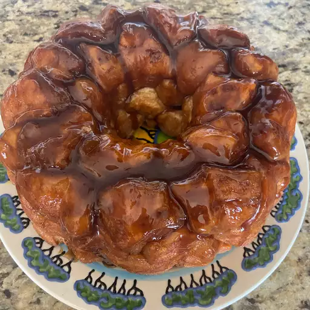

Monkey Bread

What Is Monkey Bread?
Monkey bread is a pull-apart bread made with bite-size pieces of dough coated with sugar and spice and baked with a buttery brown sugar sauce in a tube or Bundt pan. To serve monkey bread, invert it onto a large plate and let everyone pull it apart into individual pieces with their fingers or forks.
Ingredients
- Biscuit dough
- Sugar and cinnamon
- Walnuts (optional)
- Raisins (optional)
- Margarine and brown sugar
Steps
- Cut the biscuits into quarters and coat in cinnamon-sugar.
- Arrange the pieces in the pan. Add the raisins and nuts among the pieces if you're using them.
- Boil the brown sugar and margarine, then pour over the biscuits.
- Bake the monkey bread in the preheated oven.